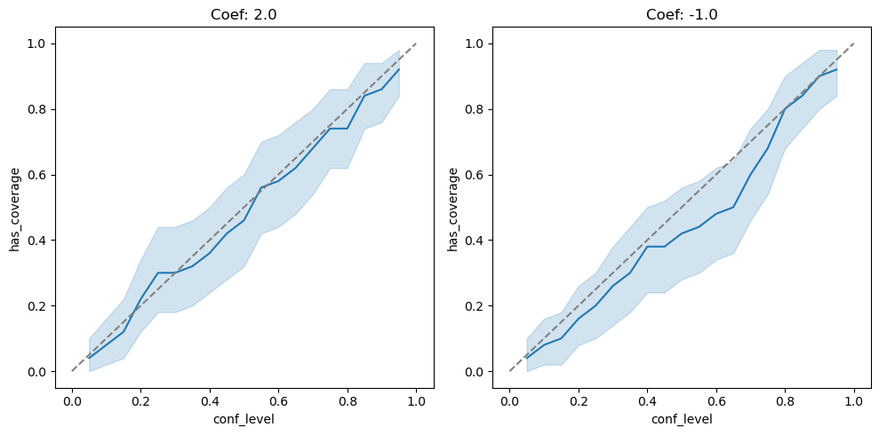

Contents
import jax.numpy as jnp
import jax
import numpy as np
import pandas as pd
import d3p
from twinify.napsu_mq.napsu_mq import NapsuMQModel
from twinify.napsu_mq import rubins_rules as rubin
from twinify.napsu_mq import marginal_query
from twinify.napsu_mq.markov_network import MarkovNetwork
from twinify.napsu_mq import maximum_entropy_inference as mei
from twinify.napsu_mq import privacy_accounting
from tests.napsu_mq.binary_logistic_regression_generator import BinaryLogisticRegressionDataGenerator
import seaborn as sns
import matplotlib.pyplot as plt
import statsmodels.api as sm
from statsmodels.tools.sm_exceptions import PerfectSeparationError
from tqdm import tqdm
n = 2000
n_syn_datasets = 100
n_syn_dataset = n
epsilon = 1.0
delta = n**(-2)
conf_levels = np.linspace(0.05, 0.95, 19)
true_params = jnp.array((2.0, -1.0))
d = true_params.shape[0] + 1
def gen_data(rng):
data_gen = BinaryLogisticRegressionDataGenerator(true_params)
data = data_gen.generate_data(n, rng)
x_values = data_gen.x_values
values_by_feature = data_gen.values_by_feature
return data, x_values, values_by_feature
def get_dp_suff_stat(rng, queries, data):
suff_stat = jnp.sum(queries.flatten()(data), axis=0)
sensitivity = np.sqrt(suff_stat.shape[0])
sigma_DP = privacy_accounting.sigma(epsilon, delta, sensitivity)
dp_suff_stat = suff_stat + sigma_DP * jax.random.normal(key=rng, shape=suff_stat.shape)
return dp_suff_stat, sigma_DP
def record(ci, conf_level, dim, repeat_ind):
return {
"has_coverage": int(ci[0] <= true_params[dim].item() <= ci[1]),
"conf_level": conf_level,
"dim": dim,
"repeat_ind": repeat_ind
}
def logistic_regression(datasets, col_to_predict=None, add_constant=True):
m, n, d = datasets.shape
if col_to_predict is None: col_to_predict = d - 1
feature_cols = set(range(d))
feature_cols.remove(col_to_predict)
feature_cols = list(feature_cols)
num_coefs = d if add_constant else d - 1
q = np.zeros((m, num_coefs))
u = np.zeros((m, num_coefs))
for i in range(m):
dataset = datasets[i,:,:]
feature_array = sm.add_constant(dataset[:, feature_cols], has_constant="add") if add_constant else dataset[:, feature_cols]
y_array = dataset[:, col_to_predict]
try:
syn_model = sm.GLM(y_array, feature_array, family=sm.families.Binomial())
syn_result = syn_model.fit()
q[i, :] = syn_result.params
u[i, :] = syn_result.bse**2
except PerfectSeparationError:
q[i, :] = np.full(num_coefs, np.nan)
u[i, :] = np.full(num_coefs, np.nan)
return q, u
n_repeats = 50
records = []
rng = d3p.random.PRNGKey(74249069)
rngs = d3p.random.split(rng, n_repeats)
for i in tqdm(range(n_repeats)):
data_rng, inference_rng, sampling_rng = d3p.random.split(rngs[i], 3)
data_rng = d3p.random.convert_to_jax_rng_key(data_rng)
data, x_values, values_by_feature = gen_data(data_rng)
data = pd.DataFrame(data, dtype="category")
model = NapsuMQModel(queries=[tuple(range(d))])
result = model.fit(
data=data,
rng=inference_rng,
epsilon=epsilon,
delta=delta,
show_progress=False
)
synthetic_dfs = result.generate(
rng=sampling_rng,
num_data_per_parameter_sample=n_syn_dataset,
num_parameter_samples=n_syn_datasets,
single_dataframe=False
)
syn_datasets = np.stack(synthetic_dfs, axis=0).astype(int)
q, u = logistic_regression(syn_datasets, add_constant=False)
for j in range(d - 1):
for conf_level in conf_levels:
qi = q[:,j]
ui = u[:,j]
inds = (np.isfinite(qi) & np.isfinite(ui))
qi = qi[inds]
ui = ui[inds]
ci = rubin.conf_int(qi, ui, conf_level)
records.append(record(ci, conf_level, j, i))
df = pd.DataFrame.from_records(records)
100%|██████████████████████████████████████████████████████████████████████████████████████████████████████████████████████████████████████████████████████████████████| 50/50 [06:01<00:00, 7.24s/it]
fig, axes = plt.subplots(1, d - 1, figsize=(5 * (d - 1), 5))
for i in range(d - 1):
cdf = df[df.dim == i]
ax = axes[i]
sns.lineplot(data=cdf, x="conf_level", y="has_coverage", ax=ax)
ax.plot((0, 1), (0, 1), linestyle="dashed", color="grey")
ax.set_title("Coef: {}".format(true_params[i].item()))
plt.tight_layout()
plt.show()
